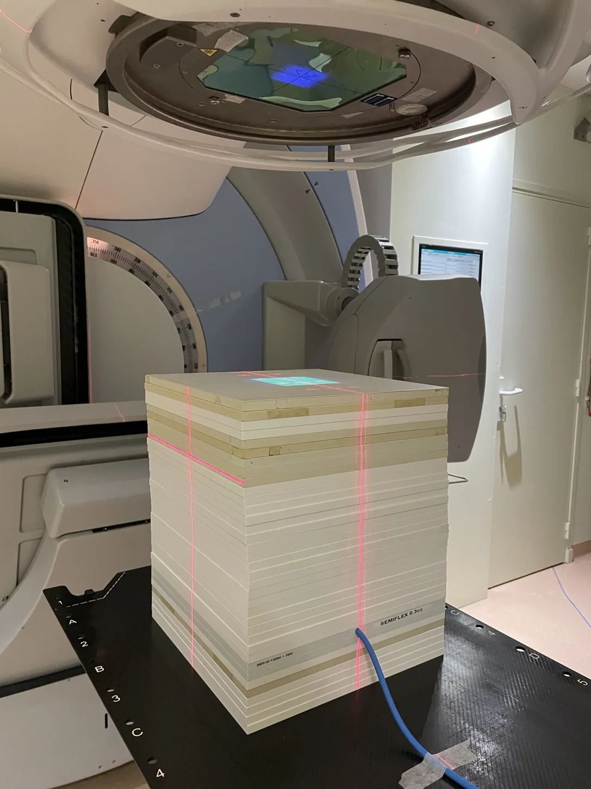

Projet phare · Master 2 · 2026
Dosimétrie in vivo par imagerie portale
Pendant six mois au Centre hospitalier régional universitaire de Tours, en collaboration avec DOSIsoft, j'ai travaillé sur la vérification expérimentale d'un modèle de calcul de dose en condition de transit.
Au programme : mesures avec chambre d'ionisation, fantômes, analyse d'images portales et simulations Monte Carlo pour confronter les prédictions aux mesures.
Lire mon mémoire ↗